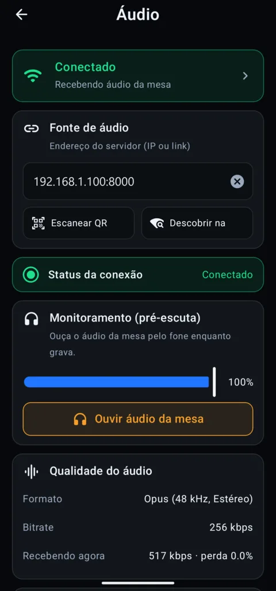

Músicos e vocais
Cada integrante do louvor ouve a mesa no fone, pelo próprio celular.
RETORNO SEM FIO
Com o Kinnor Live, o som da mesa chega aos celulares da equipe pelo Wi-Fi da igreja. Basta um fone de ouvido para músicos, vocais e voluntários acompanharem o culto — sem cabo até o palco e sem comprar aparelhos de retorno.

PARA QUEM É
Cada integrante do louvor ouve a mesa no fone, pelo próprio celular.
Quem filma acompanha a pregação e as deixas do culto, mesmo longe das caixas.
Intérpretes, recepção e ministérios de apoio ouvem o culto de qualquer lugar do templo.
O computador da mídia recebe o som da mesa e envia para os celulares pela rede Wi-Fi da igreja, em estéreo 48 kHz com o codec Opus — o mesmo tipo de áudio das chamadas profissionais.
O mixer do Kinnor Live tem uma saída só para os celulares, separada da transmissão: o técnico decide o que a equipe ouve no fone sem mexer no som da live.

PASSO A PASSO
No mixer, escolha as fontes da saída Celulares e clique em Enviar para os celulares.
No app, conecte pelo QR Code da tela e toque em Ouvir a mesa (retorno).
Coloque o fone e ajuste o volume no próprio celular. Pronto.
Para quem canta ou toca, escolha Menor atraso no mixer, use fone com fio e um Wi-Fi com bom sinal perto do palco. Fones Bluetooth funcionam, mas acrescentam atraso.
DÚVIDAS FREQUENTES
Instale o Kinnor Live no computador ligado à mesa, clique em Enviar para os celulares e, no app, toque em Ouvir a mesa (retorno). O som chega pelo Wi-Fi e sai no fone do celular.
Não. O som vai do computador para os celulares pela rede Wi-Fi da igreja, sem usar internet.
Vários. Cada celular conectado recebe o som da mesa; o limite depende da capacidade da rede Wi-Fi da igreja.
Pode, mas fones Bluetooth acrescentam atraso. Para músicos e vocais, prefira fone com fio.
Não. A saída para os celulares é separada da saída da transmissão ao vivo no mixer.
COMECE HOJE
Baixe o Kinnor Live grátis e use os celulares que vocês já têm.